Analysis Dashboard Documentation
Analysis Dashboard Documentation
About AnalysisDashboard
Analysis of the buildstreet takes time, especially when there are issues. This tool is mend to help in the analysis and recognize when failures/issues are recurring. Overtime it should also be able to identify random issues.
Technology used by the AnalysisDashboard
- PlayFramework as web framework, it support handling of REST URLs.
- Bootstrap for uniform styling.
- AngularJS for the web-app part.
Installation for development
- You have to download the Play Framework. Then you have to unzip the tool.
- You have to create a database in MySQL e.g. 'analysisDashboard'
- You have edit the configuration at
conf/application.conf, e.g.:
db.default.driver=com.mysql.jdbc.Driver db.default.url="jdbc:mysql://localhost/analysisDashboard" db.default.user=root db.default.password=password db.default.jndiName=DefaultDS jpa.default=defaultPersistenceUnit
- Clone the Git repository to a certain directory on you machine (you can also download the sources as zip).
git clone https://github.com/cbos/AnalysisDashboard.git
- Start the Play Framework console.
$ cd /path/to/any/application # Execute the play framework ('play' can be found in the play folder) $ play # Now can do all kind of actions in the play framework like running the application: $ [AnalysisDashboard] run - Now visit http://localhost:9000to start using the AnalysisDashboard
You will see an empty AnalysisDashboard:
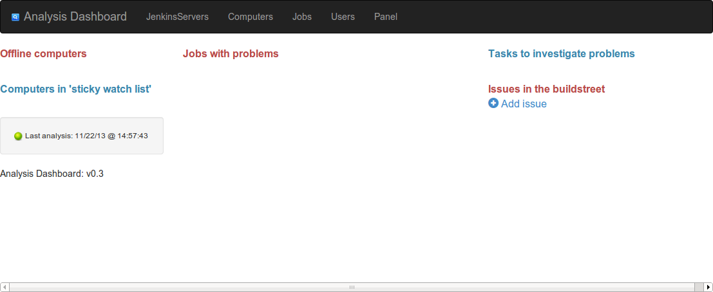
Configuration
To fill the AnalysisDashboard some configuration has to be done. In the navigation bar in to you find 4 items to configure, these are listed in the 4 chapters below.
A server can be added by clicking on the icon.
For each server you have to fill the following fields:
Once you have filled in one or more Jenkins servers the AnalysisDashboard will start analyzing the jobs each 2 minutes.
Once you have configured the Jenkins server(s) you have to visit the 'Jobs' list to adjust this list to appear in the right order on the dashboard.
You can choose to stop watching a slave. That means it still be analyzed by the scheduled analyzer, but the results are not visible anymore on the dashboard. You can reach that by unchecking the checkbox in the column 'Watch'.
You can also continuously add a slave to the dashboard even if it is successful. That you can enable with 'Stick watch'. The slave will appear in the section for 'sticky watch list'. Some slaves require special attention, when these are offline you have an issue, which you want to know as soon as possible, you like to prevent that. Jenkins is monitoring the free diskspace for example. That is mentioned as detail for sticky slaves.
You can choose to stop watching a job. That means it still be analyzed by the scheduled analyzer (because it is on the view), but the results are not visible anymore on the dashboard. You can reach that by unchecking the checkbox in the column 'Watch'.
The order of jobs is done based on the Job type. There are these types of jobs:
For each job you will see a link to open the details of a job, there you can find more information of the current status of the job and the history of a job.
A user can be added by clicking on the icon.
Jenkins servers
The AnalysisDashboard can monitor multiple Jenkins servers. Each Jenkins server has to be added to the list of servers.A server can be added by clicking on the icon.
For each server you have to fill the following fields:
| Field | Explanation | Required |
|---|---|---|
| Name | Name you give to the Jenkins server | Yes |
| Jenkins URL | The URL where the Jenkins server can be accessed (like http://localhost:8080/jenkins) | Yes |
| Slave labels to analyze | In Jenkins you can add labels to a slave machine, you can configure that at
http://JENKINSSERVER/jenkins/computer/SLAVENAME/configure on your Jenkins server. We used that to add an label for the corresponding team who own the slave. You can add multiple labels to slave. You can also add
multiple labels in this field
whitespace separated. When nothing is filled in no slaves are analyzed (for this Jenkins server) |
No |
| Views to analyze | In Jenkins you can define all kind of views. We use views to have an overview per team. Each job on the view will be analyzed by AnalysisDashboard. You can also add multiple views in this field whitespace separated. When nothing is filled in no views/jobs are analyzed (for this Jenkins server) | No |
Once you have configured the Jenkins server(s) you have to visit the 'Jobs' list to adjust this list to appear in the right order on the dashboard.
Computers
The list of computers is automatically filled based on the 'Slave labels to analyze' above at the Jenkins server configuration. There are 3 options you have here to modify the list. You can delete computers from the list, that can be used if the slave does not have a certain label anymore and is not analyzed anymore. In that case you have to remove it from the list manually.You can choose to stop watching a slave. That means it still be analyzed by the scheduled analyzer, but the results are not visible anymore on the dashboard. You can reach that by unchecking the checkbox in the column 'Watch'.
You can also continuously add a slave to the dashboard even if it is successful. That you can enable with 'Stick watch'. The slave will appear in the section for 'sticky watch list'. Some slaves require special attention, when these are offline you have an issue, which you want to know as soon as possible, you like to prevent that. Jenkins is monitoring the free diskspace for example. That is mentioned as detail for sticky slaves.
Jobs
The list of jobs is automatically filled based on the 'Views to analyze' above at the Jenkins server configuration. There are 3 options you have here to modify the list. You can delete jobs from the list, that can be used if the job is not part of a view anymore and is not analyzed anymore. In that case you have to remove it from the list manually.You can choose to stop watching a job. That means it still be analyzed by the scheduled analyzer (because it is on the view), but the results are not visible anymore on the dashboard. You can reach that by unchecking the checkbox in the column 'Watch'.
The order of jobs is done based on the Job type. There are these types of jobs:
- Full build
- E.g. the builds creating the full installer
- Install
- Jobs which install the full build
- Upgrade
- Jobs executing an upgrade from an old installation to the latest full build
- Sync-merge
- Job executing the sync-merge from a parent branch to the working branch of a team
- Drop-merge
- Job executing the drop-merge from a working branch of a team to the parent branch
- Quick build
- Jobs executiong compile / builds of a part of the product for quick validation
- Regression test
- Jobs executing all kind of regression tests
- Loadtests
- Jobs executing load tests
- Misc
- 'All' other jobs
- Unknown
- This is the default type for all new analyzed jobs.
For each job you will see a link to open the details of a job, there you can find more information of the current status of the job and the history of a job.
Users
Tasks on the dasboard can be assigned to users, therefor you can configure users.A user can be added by clicking on the icon.
| Field | Explanation | Required |
|---|---|---|
| Username | The user name of the user used in Crucible (as the Avatar is loaded from Crucible) | Yes |
| Full name | The full name of the user | No |
Dashboard usage
There are 4 sections on the dashboard:
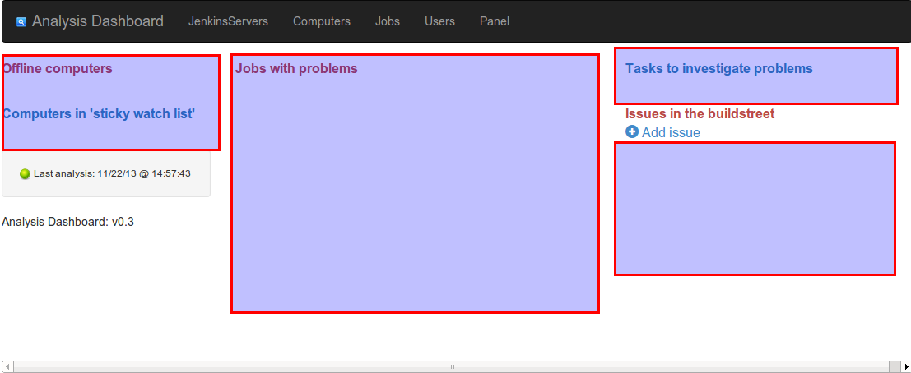
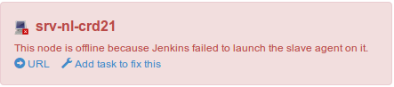
When you hover the item you will get the options available:
There are 3 types of failures:
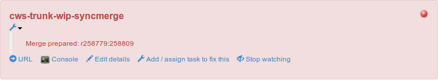
or it will show a list of testfailures:
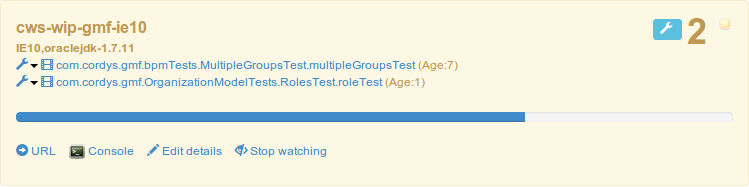
If the list of testfailures is bigger then 5 failures, no list is shown on the dashboard, only with the details of the job.
This example unstable job has a bar which shows the progress of the job (based on the calculation done by Jenkins).
When you hover the job you have these options:
Same you can do when an issue is assigned, then you will see this: BOP-12345 . You can unlink it from the issue by clicking on the remove icon .
At the right side of this view you see the error message and the stacktrace.
When you hover a test failure, you will see that information of that particular test failure.
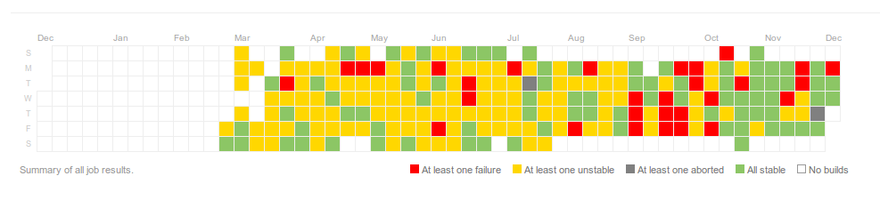
With this chart you can have a feeling about stability of a job. When you hover a box you will get the info about that day: date and number of failed builds, number of unstable builds, number of aborted build and number of stable builds. As soon as there is non-stable run, it will turn into that color although there might be more successful runs as well.
Next to this information it will give all information available for a job on the Analysis Dashboard without the limition of number of failing testcases.
That might be an action to solve the issue (if that can be done quickly) or log one or more tickets to get the issue(s) addressed.
When there is a task available you will see an item like this:
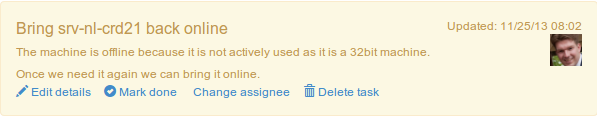
When you hover the item you will get the options available:
To make that available in the Analysis Dashboard you click on ' Add issue' in the section of 'Issues in the buildstreet'.
That will give a dialog where you can enter the title and number of a ticket. This is linking to Jira.
Once you are done you get for exaple this:
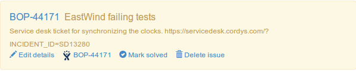
When you hover the item you will get the options available:
- Offline computers
- This will list all offline slaves (and the sticky watch list)
- Jobs with problems
- This will list all jobs having issues or jobs which are (temporary) disabled. Jobs in this list require attention
- Tasks to investigate
- Offline computers and jobs require some attention. You can create 'short lived' tasks for that. Based on that investigation can be done. Based on that first analysis and ticket can be created or the (configuration) issue can be solved.
- Issues in the buildstreet
- This is a list of identified issues where tickets for have been created. This is not synced from the ticket system
Offline computers
When there is a computer offline you will see an item like this: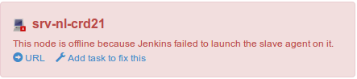
When you hover the item you will get the options available:
- URL
- When you click on this a new window/tab will be opened and the page on Jenkins about this slave will be opened.
- Add task to fix this
- When you click on this a new task is added to the task list
Once you have added a task to the tasklist the box will get a flag that a task is available: .
As soon as that task is completed, it will turn green: 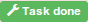. For the handling of the task itself, see the section about 'Tasks to investigate'.
Jobs with problems
This column will contain all (watched) jobs with problems. The ordering of jobs is based on the job type (see configuration).There are 3 types of failures:
- Failed job (compile issue, install issue e.g.)
- Unstable job (failing testcases)
- Aborted, new or disabled job.
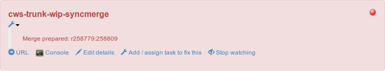
or it will show a list of testfailures:
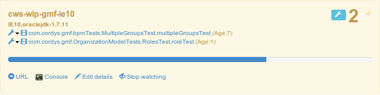
If the list of testfailures is bigger then 5 failures, no list is shown on the dashboard, only with the details of the job.
This example unstable job has a bar which shows the progress of the job (based on the calculation done by Jenkins).
When you hover the job you have these options:
- URL
- When you click on this a new window/tab will be opened and the page on Jenkins about this job will be opened.
- 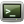 Console
- When you click on this a new window/tab will be opened and the console output of this job on Jenkins be opened.
- Edit details
- This will open a dialog where you can see the details of the job, including the history of the job (see below). You can open the link in a new tab/ new window instead of a dialog. You can do right-click and then open the link in a new tab/window.
- Add / assign task to fix this
- This will give a drop-down with all tasks. You can add this job to an existing investigation task (in that task should include this job) or you can create a new task.
- Stop watching
- When this job should not be monitored from the Analysis Dashboard, you can remove it by marking it as 'stop watching' (this is the same a the checkbox in the Job list described above).
- This gives a dropdown with actions for a testcase (see below)
- This opens a popup with history of a testcase (see below). Or you can do right-click and then open the link in a new tab/window.
- Testcase link
- This is a link to Jenkins with all details in Jenkins
- (Age:x)
- This shows the number of runs in a row this testcase is failing
- Show error message
- This reveals error information of the testcase failure
- Open stacktrace in Jenkins
- This opens a new tab/window to Jenkins with all details in Jenkins
- Mark/unmark as random
- With this you can mark a testcase a 'random failing'. With this action a testcase will appear in the list of random failurs (see Random failures)
- A list of Issues
- In the remainder of the drop-down the list of issues is shown so you link the failure to a known issue.
Same you can do when an issue is assigned, then you will see this: BOP-12345 . You can unlink it from the issue by clicking on the remove icon .
Testcase history
This gives a list of all failures of a testcase. Analysis Dashboard only records failures. All successful occurrences are not recorded.| Field | Explanation |
|---|---|
| Issue | When an issue is assigned to this occurrence, the issue is listed here |
| Random | When testcase failure was marked as random, it is listed here |
| Trend | A link to Jenkins with trendline for this specific testcase failure, this link might result in a 404 when the history in Jenkins is not captures (long enough) |
| URL | A link to Jenkins for this specific testcase failure, this link might result in a 404 when the history in Jenkins is not captures (long enough) |
| Date | The date and time of the testcase failure (date and time of the job) |
| Age | This shows the number of runs in a row this testcase is failing at that moment |
| Job | The name of the job in which the testcase was failing. A testcase can be executed by multiple jobs |
| Run | A job can have a matrix configuration. This will list the name of the matrix configuration. |
At the right side of this view you see the error message and the stacktrace.
When you hover a test failure, you will see that information of that particular test failure.
Job details view
A job details view give a summary of the job status: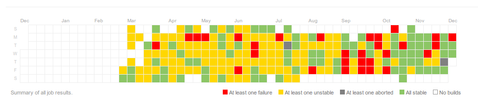
With this chart you can have a feeling about stability of a job. When you hover a box you will get the info about that day: date and number of failed builds, number of unstable builds, number of aborted build and number of stable builds. As soon as there is non-stable run, it will turn into that color although there might be more successful runs as well.
Next to this information it will give all information available for a job on the Analysis Dashboard without the limition of number of failing testcases.
Tasks to investigate problems
The task list is not a replacement of a task tracking system like Jira, but to quickly assign buildstreet problems to someone how can do a first investigation.That might be an action to solve the issue (if that can be done quickly) or log one or more tickets to get the issue(s) addressed.
When there is a task available you will see an item like this:
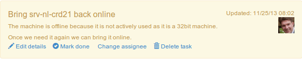
When you hover the item you will get the options available:
- Edit details
- This will open a dialog where you can edit the details field and choose a different assignee.
- Mark done
- Once a task is handled you can mark the task as done. Once you have done that the task turns green and you will get this option: ' Uncomplete task' to mark it as uncomplete. A completed task remains for the remainder of the day in the list and will disappear after that.
- Change assignee
- This will give a drop-down with all users. You can select a user to whom the task should be assigned. A mail is send as soon as an assignee is changed.
- Delete task
- This can be used if a task is wrongly created. NOTE: once a task is done you should use the option 'Mark done' as described above.
Issues in the buildstreet
An issue is a identified issue for which a ticket is created.To make that available in the Analysis Dashboard you click on ' Add issue' in the section of 'Issues in the buildstreet'.
That will give a dialog where you can enter the title and number of a ticket. This is linking to Jira.
Once you are done you get for exaple this:
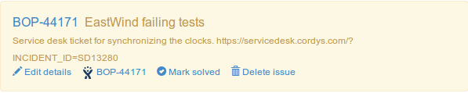
When you hover the item you will get the options available:
- Edit details
- This will open a dialog where you can edit the details of the issue.
- Link to Jira
- When you click here, the Jira ticket will be opened (same as you click on the ticket id in the box itself)
- Mark solved
- Once a issue is handled you can mark the issue as solved. Once you have done that the issue turns green and you will get this option: ' Mark unsolved' to mark it as unsolved. A completed issue remains for the remainder of the day in the list and will disappear after that.
- Delete task
- This can be used if an issue is wrongly created. NOTE: once an issue is done you should use the option 'Mark solved' as described above.
Random failures
This gives a list of all random marked test failures. It is ordered with the latest random marked testcase as first item in the list.
A testcase can be marked as random if a testcase fails without a good explanation. When you see this appearing more often (based on the history) there might be a good reason to invest time to prevent is from 'random' failing as each time you see the failure you have to invest time to see why it fails.
A testcase can be marked as random if a testcase fails without a good explanation. When you see this appearing more often (based on the history) there might be a good reason to invest time to prevent is from 'random' failing as each time you see the failure you have to invest time to see why it fails.
| Field | Explanation |
|---|---|
| When you click on this you will get an history overview of this particular testcase in a dialog. See 'testcase history' described above. Or you can do right-click and then open the link in a new tab/window. |
|
| ClassName | Full classname of the testcase failure |
| MethodName | Methodname of the failing testcase |
| Occurences | Number of instances which are marked as random |
| Last occurence | Last date and time when this testcase was marked as random (date and time of testcase execution) |
Panel
Panel is ment to be used in the same way as the Extreme Feedback panel plugin of Jenkins
It gives a quick overview of the status, without all detailed information and no options to make changes.
Example usage: 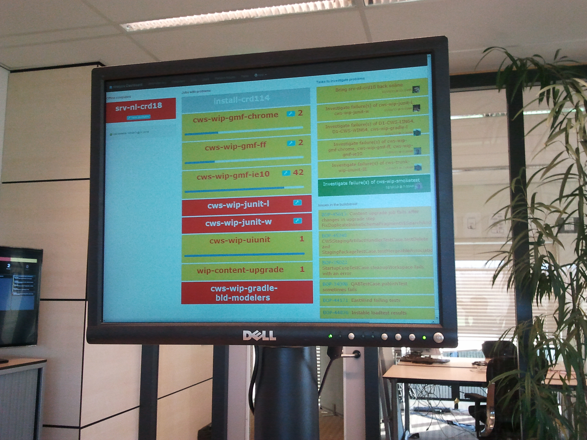
It gives a quick overview of the status, without all detailed information and no options to make changes.
Example usage: 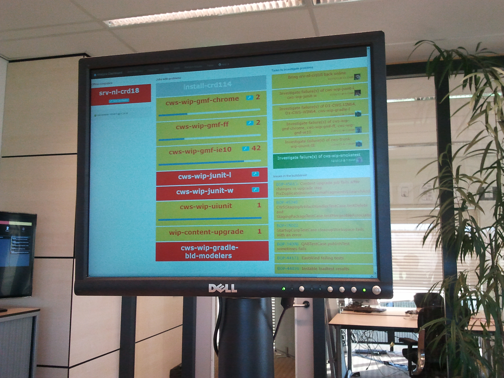